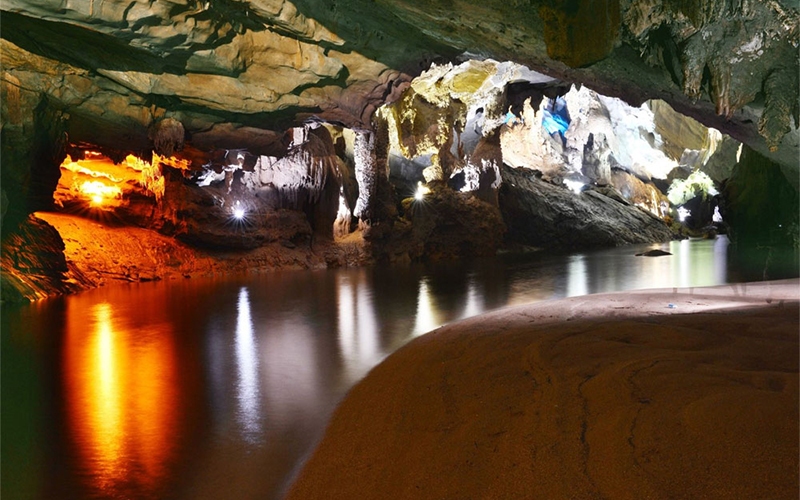
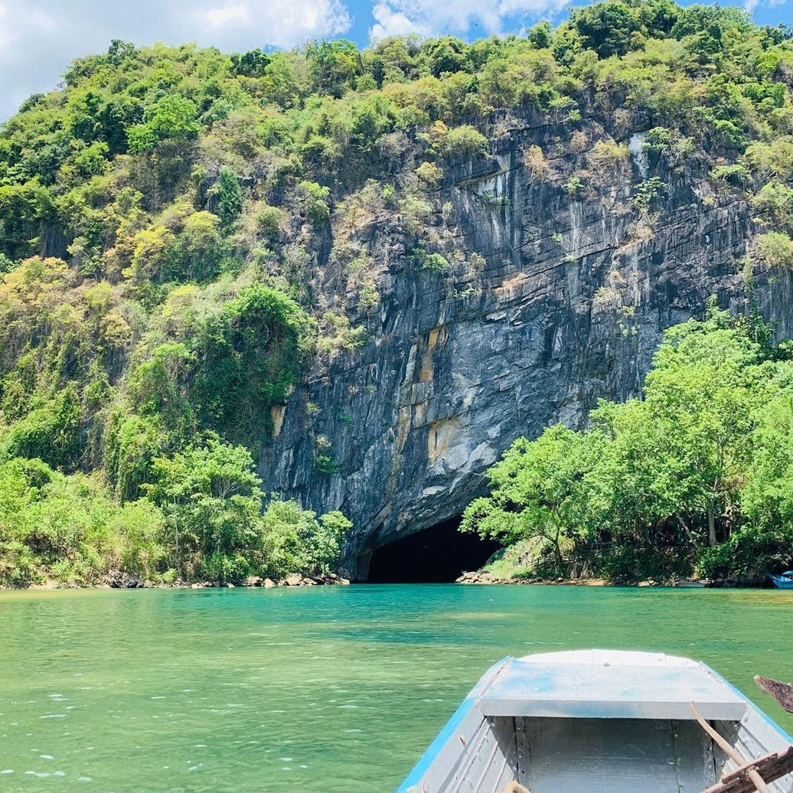
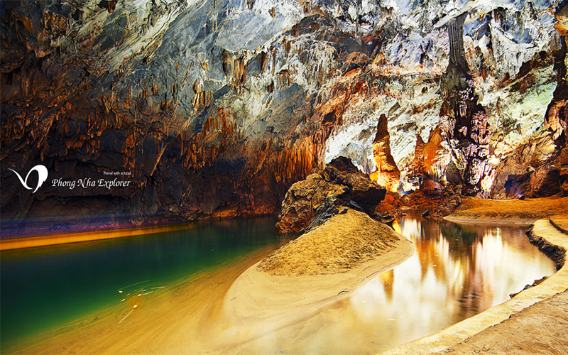
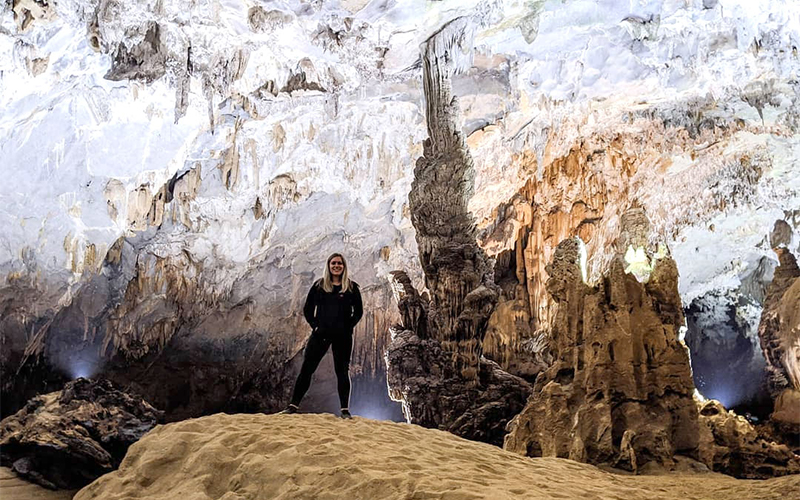
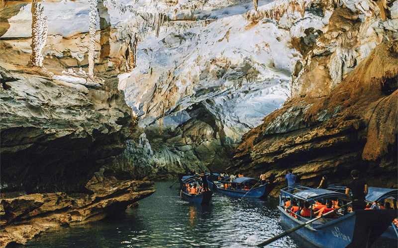
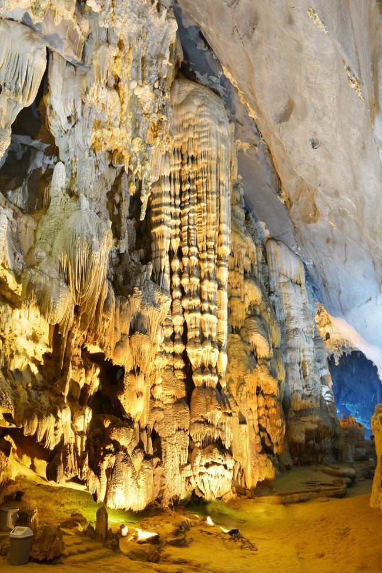
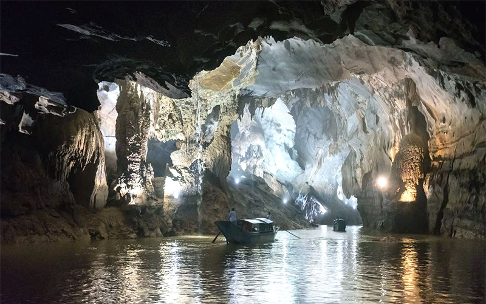
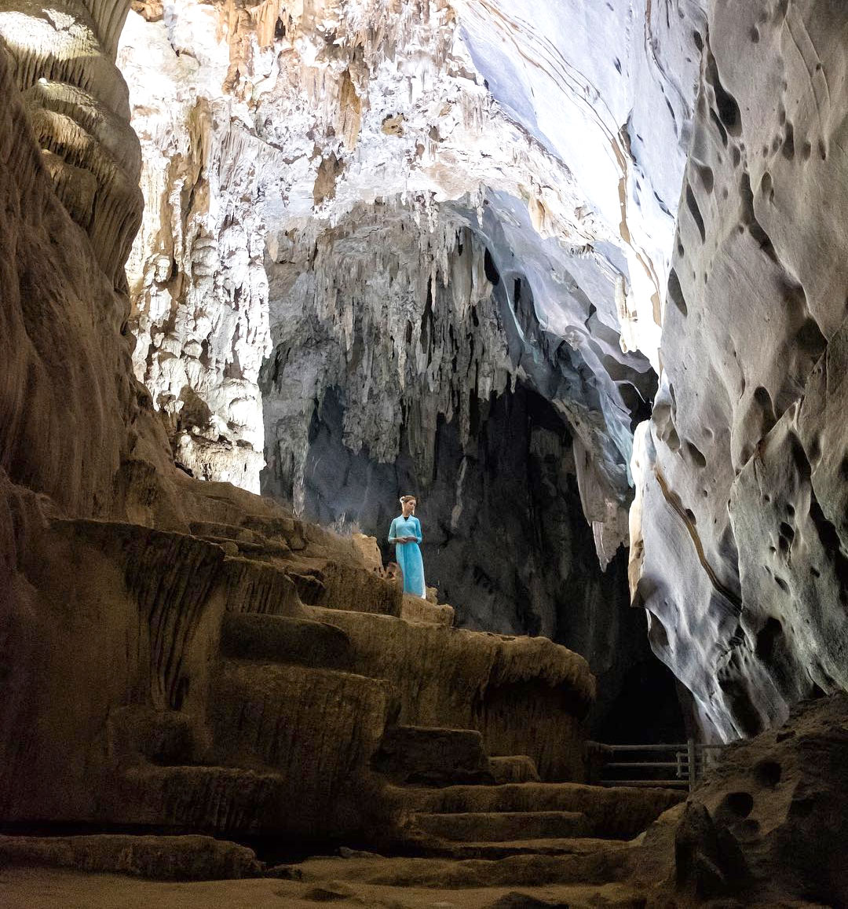

ĐỘNG PHONG NHA - ĐỆ NHẤT KỲ QUAN ĐỘNG
Động Phong Nha là danh thắng tiêu biểu nhất của hệ thống hang động thuộc quần thể danh thắng Phong Nha - Kẻ Bàng. Phong Nha được bình chọn là một trong những hang động đẹp nhất thế giới với các tiêu chí: Sông ngầm dài nhất, Hồ nước ngầm đẹp nhất. Cửa hang cao và rộng nhất, Các bãi cát, bãi đá ngầm đẹp nhất, Hang khô rộng và đẹp nhất, Hệ thống thạch nhũ kỳ ảo và tráng lệ nhất, Hang động nước dài nhất. Động Phong Nha là một điểm đến được nhiều du khách lựa chọn trong chuyến du lịch Quảng Bình.
Hang động nước dài nhất
Đến Phong Nha Kẻ Bàng, bạn sẽ ấn tượng với hệ thống Hang Vòm, nổi bật nhất là hang động nước Phong Nha có chiều dài lên đến 28 km, đầu nguồn của con Sông Son nổi tiếng chạy xuyên qua quần thể núi đá vôi Phong Nha – Kẻ Bàng, hệ thống hang Vòm này có quy mô rất lớn, bắt đầu từ hang Rục ở độ cao 360m thuộc bản Cà Roòng xã Thượng Trạch sát biên giới Lào.
Động Phong Nha có cửa hang cao nhất và rộng nhất
Động Phong Nha có một lối vào duy nhất với cửa hang rộng 25m, cao 10m, trông giống như một cái bát lớn treo ngược trên mặt nước, với kích thước tự nhiên lớn nên rất thuận tiện cho tàu bè đưa du khách vào tham quan, đó cũng chính là lý do về mùa hè tuy bên ngoài nóng rực nhưng đi sâu vào hang vẫn có gió xuyên qua mát rượi.
Hang động Phong Nha có bãi cát và bãi đá ngầm đẹp nhất
Các khối đá ngầm trong Động Phong Nha qua hàng trăm triệu năm với sự bào mòn của nước và thời gian tạo nên những hình thù tự nhiên, các tảng đá có hình hài như Tượng phật, Kỳ lân, Sư tử… là một trong những đặc điểm độc đáo khiến du khách tò mò và thích thú nhất là mỗi khi đoán được hình dạng chính xác với tên gọi.
 Hang động có hồ nước ngầm đẹp nhất
Hồ nước ngầm xanh thẳm với chiều dài 13969m là một địa điểm tham quan hấp dẫn khi đến với Phong Nha. Đến đây bạn có thể trải nghiệm hải trình khám phá và thảnh thơi ngắm nhìn thế giới cổ tích có thật trước mắt.
Hang động có hệ thống thạch nhũ đẹp nhất hùng vĩ nhất
Đến Động Phong Nha bạn sẽ được chiêm ngưỡng ngay tuyệt tác của kỳ diệu của thiên nhiên khắc họa nên vô số hình ảnh kỳ lạ và quyến rũ. Nơi đây không chỉ có những bãi đá ngầm, hồ nước ngầm tuyệt đẹp mà còn có hệ thống thạch nhũ siêu to khổng lồ với màu sắc phong phú gây ấn tượng cho nhiều du khách bởi sự kỳ vĩ, tráng lệ.
Hang động có con sông ngầm đẹp nhất
Dòng sông ngầm trong Động Phong Nha có chiều dài lên đến 1,5km, đây là một điểm tuyệt vời trong hành trình chèo thuyền Kayak thám hiểm Động Phong Nha 4.5km xuyên Sơn Hồ, một hành trình khám phá khung cảnh hoang sơ tráng lệ và tận mắt chứng kiến vẻ đẹp măng đá với làn hơi sương mờ ảo trong bóng tối mập mờ hắt chút ánh sáng.
Động Phong Nha có hang khô đẹp và rộng nhất
Là hang động nước có hang khô rộng nhất và đẹp nhất, nên khi đến thăm động Phong Nha bạn sẽ được chiêm ngưỡng hệ thống thạch nhũ tráng lệ dọc theo cầu thang gỗ được bố trí xuyên suốt chiều dài 1km tham quan. Càng vào sâu, bạn càng có nhiều cơ hội tự mình khám phá kiệt tác của thiên nhiên, ngắm nhìn từng phiến nhũ đá với vô vàn kiểu dáng màu sắc lấp lánh khác nhau.
Động Phong Nha ở đâu?
Động Phong Nha là một hang động đẹp trong vùng đệm của Vườn quốc gia Phong Nha – Kẻ Bàng, cách trung tâm thành phố Đồng Hới về hướng tây bắc khoảng 45km, thuộc địa phận xã Sơn Trạch, huyện Bố Trạch.
Những đặc điểm thú vị trên đây chính là lý do khiến động Phong Nha luôn là một trong những điểm đến hấp dẫn nhất trong lòng các tín đồ mê khám phá. Nơi đây luôn có nhiều điều thú vị, từ bất ngờ này đến bất ngờ khác, để lại vô vàn khoảnh khắc ấn tượng trong lòng mỗi du khách.